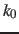
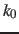

Changing force constant
The force constant of the harmonic restraint may also be changed to equilibrate [20].
-
targetForceConstant
 Change the force constant towards this value
Change the force constant towards this value
Context: harmonic
Acceptable values: positive decimal
Description: When defined, the current forceConstant will be moved towards
this value during the simulation. Time evolution of the force constant
is dictated by the targetForceExponent parameter (see below).
By default, the force constant is changed smoothly over a total of
targetNumSteps steps. This is useful to introduce or
remove restraints in a progressive manner.
If targetNumStages is set to a nonzero value, the
change is performed in discrete stages, lasting targetNumSteps
steps each. This second mode may be used to compute the
conformational free energy change associated with the restraint, within
the FEP or TI formalisms. For convenience, the code provides an estimate
of the free energy derivative for use in TI. A more complete free energy
calculation (particularly with regard to convergence analysis),
while not handled by the colvars module, can be performed by post-processing
the colvars trajectory, if colvarsTrajFrequency is set to a
suitably small value. It should be noted, however, that restraint
free energy calculations may be handled more efficiently by an
indirect route, through the
determination of a PMF for the restrained coordinate.[20]
-
targetForceExponent Exponent in the time-dependence of the force constant
Context: harmonic
Acceptable values: decimal equal to or greater than 1.0
Default value: 1.0
Description: Sets the exponent,  , in the function used to vary the force
constant as a function of time. The force is varied according to a
coupling parameter
, in the function used to vary the force
constant as a function of time. The force is varied according to a
coupling parameter  , raised to the power :
, raised to the power :
 , where ,
, where ,
 , and
, and  are the initial, current, and final values
of the force constant. The parameter evolves linearly from
0 to 1, either smoothly, or in targetNumStages equally spaced
discrete stages, or according to an arbitrary schedule set with
lambdaSchedule.
When the initial value of the force constant is zero,
an exponent greater than 1.0 distributes the effects of introducing the
restraint more smoothly over time than a linear dependence, and
ensures that there is no singularity in the derivative of the
restraint free energy with respect to lambda. A value of 4 has
been found to give good results in some tests.
are the initial, current, and final values
of the force constant. The parameter evolves linearly from
0 to 1, either smoothly, or in targetNumStages equally spaced
discrete stages, or according to an arbitrary schedule set with
lambdaSchedule.
When the initial value of the force constant is zero,
an exponent greater than 1.0 distributes the effects of introducing the
restraint more smoothly over time than a linear dependence, and
ensures that there is no singularity in the derivative of the
restraint free energy with respect to lambda. A value of 4 has
been found to give good results in some tests.
-
targetEquilSteps Number of steps discarded from TI estimate
Context: harmonic
Acceptable values: positive integer
Description: Defines the number of steps within each stage that are considered
equilibration and discarded from the restraint free energy derivative
estimate reported reported in the output.
-
lambdaSchedule Schedule of lambda-points for changing force constant
Context: harmonic
Acceptable values: list of real numbers between 0 and 1
Description: If specified together with targetForceConstant, sets the sequence of
discrete values that will be used for different stages.
Jérôme Hénin
2015-02-27